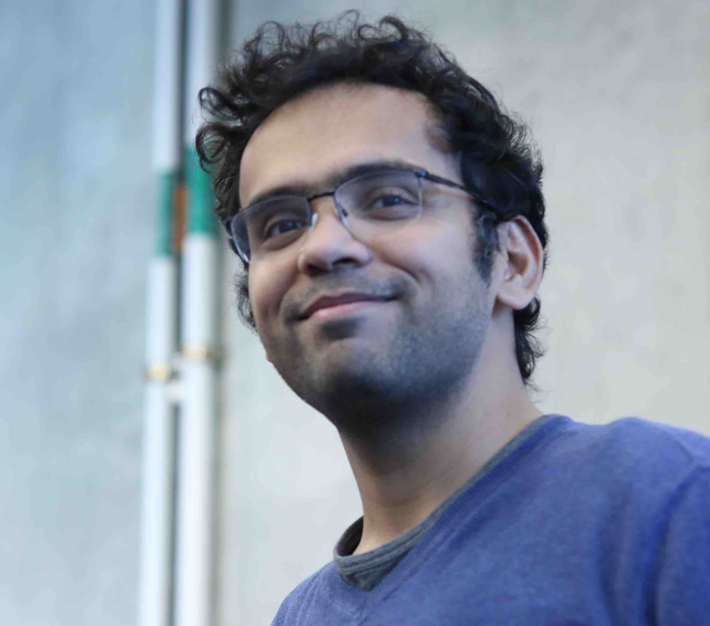

Overview
Advances in machine learning have proved critical for robots that continually interact with humans and their environments. Robots must solve the problem of both perception and decision making, i.e., sense the world using different modalities and act in the world by reasoning over decisions and their consequences. Learning plays a key role in how we model both sensing and acting. This course covers various modern robot learning concepts and how to apply them to solve real-world problems. We look at:
- Learning perception models using probabilistic inference and 2D/3D deep learning.
- Imitation and interactive no-regret learning that handle distribution shifts, exploration/exploitation.
- Practical reinforcement learning leveraging both model predictive control and model-free methods.
- Open challenges in visuomotor skill learning, forecasting and offline reinforcement learning.
Schedule (Tentative)
| Date | Lecture | Preread | Resources |
|---|---|---|---|
| Fundamentals | |||
| 1/24/23 | Introduction to Robot Learning [slides, notes] (Assignment 0 released) | Watch trailer! | The Bitter Lesson |
| 1/26/23 | Probability and Linear Algebra Refresher: Monty Hall and Procrustes Problems [slides, notes] | Prob robotics Ch 2.2, 3Blue1Brown Lec 3, Lec 4 | Singular Value Decomposition (Strang Ch 6.7, Pg 362) |
| Imitation Learning | |||
| 1/31/23 | Behavior Cloning, Feedback and Covariate Shift [slides, notes] (Assignment 1 released) | Watch Imitation Learning Lecture! | Three regimes of covariate shift |
| 2/2/23 | DAgger: Interactive Experts and No-Regret Learning [slides, notes, notes2] | MACRL (Ch 6, Pg. 53-57) | DAGGER |
| Planning and Control | |||
| 2/7/23 | Robots as Markov Decision Problems [slides] | MACRL (Ch 1) | Dan Klein slides I , slides II |
| 2/9/23 | Conquering Motion Planning via Sampling and Search [slides, notes] | Thesis, Ch. 3 | |
| 2/14/23 | Learning to Search [slides, notes] | MACRL (Ch 6, full) | LEARCH |
| 2/16/23 | Continuous MDPs: Linear Quadratic Regulator [slides, notes] | Watch LQR lecture! | MACRL (Ch 2) |
| 2/21/23 | Model Predictive Control and the Unreasonable Effectiveness of Replanning [slides, notes] (Assignment 2 released) | DeepMind MPC overview | |
| 2/23/23 | Model Predictive Control and the Unreasonable Effectiveness of Replanning (contd) | ||
| Reinforcement Learning | |||
| 3/2/23 | Temporal difference and Q learning [slides, notes] | MACRL (Ch 9) | QT-Opt |
| 3/7/23 | Policy Optimization [slides, notes] | MACRL (Ch 11) | |
| 3/9/23 | Nightmares of Policy Optimization (contd) [slides, notes] | Soft Actor Critic | |
| 3/16/23 | Dealing with Uncertainty [slides, notes] (Assignment 3 released) | ||
| 3/21/23 | Planning with Inaccurate Models [slides, notes] | ||
| 3/23/23 | Review of Algorithms [slides] | ||
| Robot Perception | |||
| 3/28/23 | Visual Representation Learning [slides, video] | Notes of representation learning | Pytorch CNN Tutorial |
| 3/30/23 | Object Detection [slides] (Project Proposals Due) | Mask RCNN | |
| World Models & Forecasting | |||
| 4/11/2023 | 3D Perception: PointNet, Neural Radiance Fields [slides] | PointNet , NERF | |
| 4/13/2023 | Forecasting in self-driving [slides] (Assignment 4 released) | ||
| 4/18/2023 | Generative World Models [slides] | ||
| Localization & Mapping | |||
| 4/20/2023 | SLAM as Graph Optimization I [slides, notes] | ||
| 4/25/2023 | SLAM as Graph Optimization II [slides, notes] | ||
| 4/27/2023 | Recap [notes] | ||
| Open Challenges | |||
| 5/2/2023 | No Class | ||
| 5/4/2023 | Visuomotor Skill Learning [slides, notes] (Final Project Presentation Video Due) | ||
| 5/9/2023 | Controlling Robots via Large Language Models (LLMs) [slides] (Final Project Review Due) |
Assignments and Final Project
There will be a total of 5 assignments, each involving a programming component and some theory. All assignments must be done individually. As the course progresses, we will release each assignment in the links below with starter code on Github.
- Assignment 0: Fundamentals
- Assignment 1: Imitation Learning
- Assignment 2: Model Predictive Control
- Assignment 3: Reinforcement Learning
- Assignment 4: Representation Learning
The graduate course version has extra questions for every assignment which is optional for the undergraduate version of the course.
There will also be a final project. This is your chance to get creative and apply what you have learned! For the project, you may work in groups of up to 3 people. There will be three deliverables - a project proposal, a final report and a final presentation. For more details, please refer to doc.
Resources
Technology
- Course Website: The ONE true hub for all information. Please check this frequently and surface any errors or sources of confusion.
- Ed: The discussion forum where all announcements are sent, where all student-TA and student-student communications occur.
- Gradescope: Where all assignments and projects are submitted.
- Canvas: Limited to no use.
Code
- Python Notebooks for CS4756: A series of notebooks used in the lectures that are useful for building intuition and learning to code.
- Python + Numpy tutorial: An excellent, concise getting started guide for Python and Numpy from CS231@Stanford.
- Pytorch tutorial: A 60 minutes Blitz! (for assignment 2 onwards).
Relevant Textbooks
The course is extensively based off of the following book:
- Modern Adaptive Control and Reinforcement Learning, James A. Bagnell, Byron Boots, and Sanjiban Choudhury
Other helpful books and notes:
- Probabilistic Robotics, Sebastian Thrun, Wolfram Burgard and Dieter Fox
- Reinforcement Learning: An Introduction, Richard S. Sutton and Andrew G. Barto
- Probability Theory: The Logic of Science,, E.T. Jaynes
Courses / Lectures
- Imitation Learning: A Series of Deep Dives, Sanjiban Choudhury
- Interactive Online Learning: A Unified Algorithmic Framework, Sanjiban Choudhury
Staff
|  |
Sanjiban ChoudhuryInstructorsanjibanc@cornell.eduOffice Hours: Tuesday 11.15 - 1 pm, Gates 413 B |
 |
Yuki WangTeaching Assistanthw575@cornell.eduOffice Hours: Monday 10 - 12 am, Upson 225 |
|
 |
Kushal KediaTeaching Assistantkk837@cornell.eduOffice Hours: Tuesday 2 - 3 pm, Zoom Tuesday 3 - 4 pm, Duffield Hall 340 |
 |
Abhishek MasandTeaching Assistantam2448@cornell.eduOffice Hours: Thursday 4.15 - 6.15 pm, Upson 202 |
|
Juntao RenTeaching Assistantjlr429@cornell.eduOffice Hours: Friday 4 - 5 pm, Upson 216, Sunday 10 - 11 am, Zoom |
Assignments, lectures, and ideas on this syllabus are partially adapted from Drew Bagnell course at Carnegie Mellon University. We thank Drew for insightful discussions and suggestions for how to structure the course.
Syllabus
Learning Outcomes
- Formulate various robot perception problems, e.g. state estimation, object detection, mapping as probabilistic inference.
- Formulate various robot decision making problems, e.g. self-driving, manipulation, assistive robots, as Markov Decision Problems (MDP).
- Implement and compare various deep learning approaches to train robot perception models for 2D / 3D vision.
- Implement and compare various learning algorithms to train robot policies for imitation learning, reinforcement learning and model predictive control.
- Identify sources of distribution shift in robot learning and apply appropriate techniques from online learning to counter it.
- Design and benchmark robot learning algorithms that integrate with open-source robot datasets and simulation platforms.
Prerequisites
MATH 1920/ MATH 2220, MATH 294, CS 1110, CS 4780 or permission of instructor. This course is targeted towards senior-level undergraduate students and junior graduate students. Graduate students should enroll in the graduate version of the course. Students should have a solid background in linear algebra and probability. This course involves implementing state of the art algorithms on real world datasets and simulators. Hence, strong familiarity with Python and neural network libraries (Pytorch / TensorFlow/ JAX) is required.
Grading Policy
Here’s a breakdown of grades:
| Component | Details | %Grade |
|---|---|---|
| Assignments | 5 assignments (5% + 4*15%) | 65% |
| Final Project | Project Proposal: 5%, Final Report: 10%, Final Presentation Video: 15% |
30% |
| Participation | In-class participation and Ed discussions | 5% |
| Total | 100% |
Assignments must be done individually. Each assignment will require students to turn in a writeup and code in Gradescope. It is acceptable for students to discuss problems with each other; it is not acceptable for students to share answers or code. Please indicate on each homework with whom you collaborated with and what online resources you used.
The graduate course version has extra questions for every assignment which is optional for the undergraduate version of the course.
The final project can be done in groups of up to 3. There are three deliverables - an extended abstract, a final report, and a final presentation video. We will share a template for abstract and final report in due time. The final presentation will be in form of a 5 minute video that will be reviewed by your peers!
Research has demonstrated that the best learning occurs when the learner is actively involved. We will have frequent opportunities for students to work together during lectures. We expect you to come to class prepared to focus, interact with classmates, and participate in the activities. We also expect you to participate in discussions on Ed and create an engaging environment.
Late Policy
Assignments must be submitted by the posted due date. You are allowed up to 3 total LATE DAYs for any deliverable throughout the entire semester. Any assignment turned in late will incur a reduction in score by 33% for each late day. The final presentation must be presented on time, no late policy applies. Regrade requests, if the case is strong and a significant number of points are at stake, should be submitted online via a private post on Ed within one week of when a deliverable is returned to the student. You must provide a justification for the regrade request.
In case of a legitimate situation or medical emergency that arises during the semester that is going to hinder your ability to complete the work on time, contact Prof. Choudhury as soon as possible. Extensions (beyond the already assigned slip days) will be granted only in exceptional circumstances, such as documented illness, not for situations such as job interviews or large workloads in other courses.
Academic Integrity
This course adheres to all aspects of Cornell's Code of Academic Integrity. Any work presented as your own must be your own, with no exceptions tolerated. Submitting work created by ChatGPT, or copied from a bot or a website, as your own work violates Academic Integrity. All violations of this policy will result in a penalty depending on the severity. The penalty may be a failing grade on the relevant assignment or exam, or a failing grade in the class. The code can be found at: http://cuinfo.cornell.edu/aic.cfm
Chat GPT
Use of text generation/editing systems such as ChatGPT: For each component of the workload, the vast majority of the intellectual work must be originated by you, not by text generation systems. It is OK to use aids for writing fluency --- but note that writing fluency is not part of the assessment rubrics below anyway.
i). Example of something that is allowed: You write the initial draft(s), review its contents. You then use some form of text generation system to proofread and improve the flow. You do not use the system's output to add extra content.
ii). Example of something that is definitely not allowed: You essentially use a text generation system to generate an early draft, even if you later post-edit and correct the output.
iii). Example of something that is OK but requires special treatment. You start with the procedure in i). But, the system output includes good points that you hadn’t thought of before, or makes you realize that a point you had made isn’t quite right. You may include the new material and/or make appropriate edits, but you should mention what specific system(s) you used and what changes you made based on it.
Diversity, Equity and Inclusion
Students in this course come from a variety of backgrounds, abilities, and identities. In order to ensure an environment conducive to learning, all members of the course must treat one another and the course staff with respect. If you feel your needs are not being adequately accommodated by the other students or instruction staff, please contact Prof. Choudhury.
COVID-19 related issues
Zoom recordings of lecturers are not available for absences, including absences due to illness.
If you are a close contact with someone who is diagnosed with COVID19, even if you do not experience symptoms, you should test yourself [and you may want to request masking for five days after exposure regardless of the outcome].
If you have symptoms of COVID19 and have not been tested:- Do not come to class.
- Email Dr.Choudhury before class starts to let [me, TA] know that you are not coming.
- Get an antigen test.
- If the test is negative, you may return to the next class. Please wear a mask until your symptoms are gone, even if you test negative.
- If your antigen test is positive, you must immediately upload the result to Daily Check: dailycheck.cornell.edu. This action will trigger instructions and a letter of temporary accommodation. You must forward the temporary accommodations email to Dr. Choudhury to receive an accommodation. (The system will not send it for you.) Once Dr. Choudhury receive the letter, we will provide guidance on how you should keep up with material for the next 5 days.
- You may return to class on day 6 provided you are asymptomatic. You must wear a mask through the end of day 10 from your first onset of symptoms.
Accomodations
Your access in this course is important to me. Please request your accommodation letter early in the semester, or as soon as you become registered with Student Disability Services (SDS), so that we have adequate time to arrange your approved academic accommodations. Once SDS approves your accommodation letter, it will be emailed to both you and me. Please follow up with Dr. Choudhury to discuss the necessary logistics of your accommodations. If you are approved for exam accommodations, please consult with Dr. Choudhury at least two weeks before the scheduled exam date to confirm the testing arrangements. If you experience any access barriers in this course, such as with printed content, graphics, online materials, or any communication barriers, reach out to me or SDS right away. If you need immediate accommodation, please speak with me after class or send an email message to me and SDS at sds_cu@cornell.edu.
Mental Health and Well-being
Your health and wellbeing are important to me. There are services and resources at Cornell designed specifically to bolster undergraduate, graduate, and professional student mental health and well-being. Remember, your mental health and emotional well-being are just as important as your physical health. If you or a friend are struggling emotionally or feeling stressed, fatigued, or burned out, there is a continuum of campus resources available to you: https://mentalhealth.cornell.edu/get-support/support-students . Help is also available any time day or night through Cornell’s 24/7 phone consultation (607-255-5155). You can also reach out to me, your college student services office, your resident advisor, or Cornel Health for support.
We encourage you to check out the comprehensive set of resources compiled by EARS, Reflect, Cornell Minds Matter, and Body Positive Cornell: Cornell Mental Health Resources Guide 2022-23